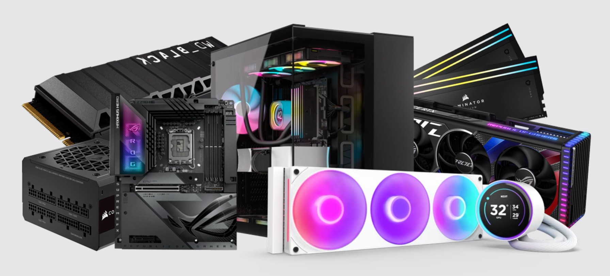
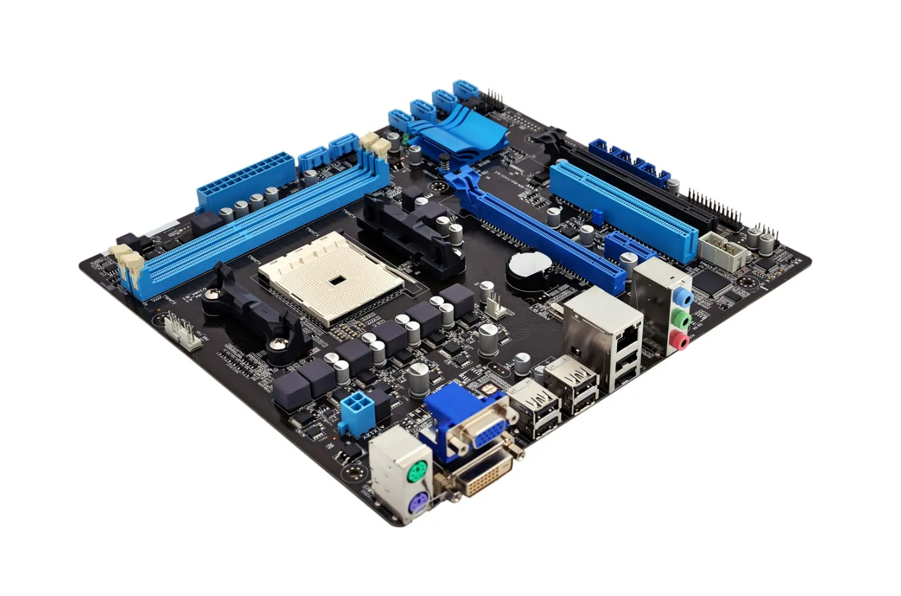
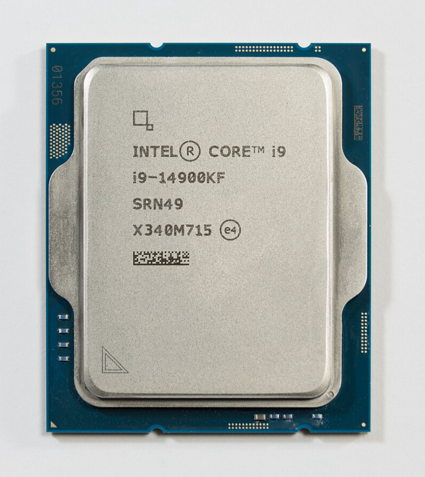
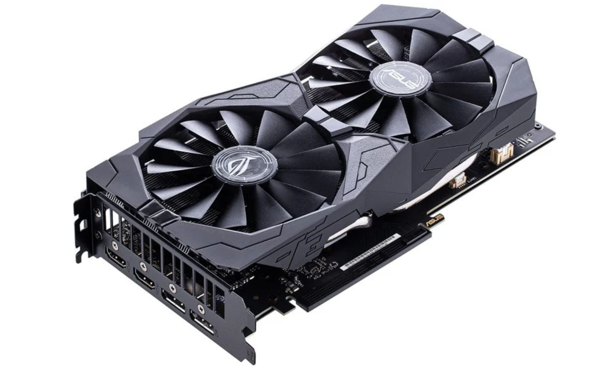
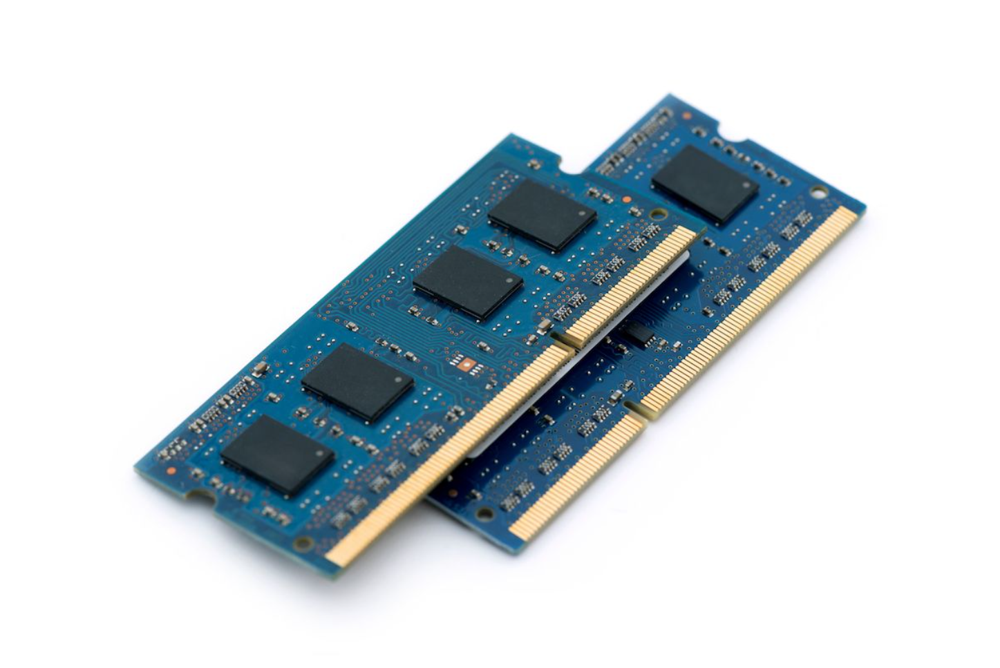
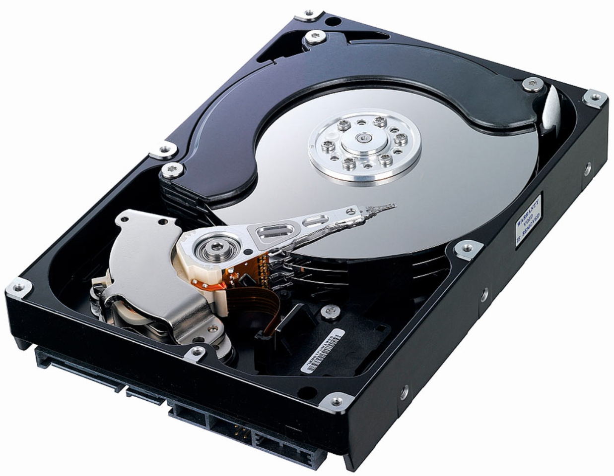
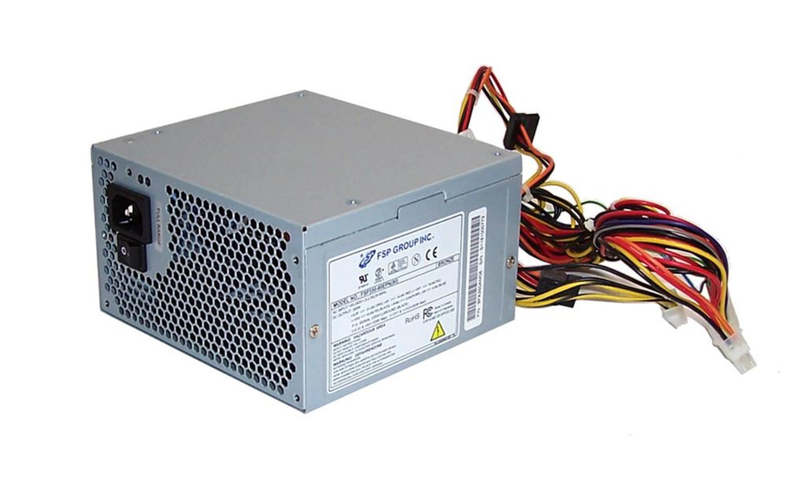
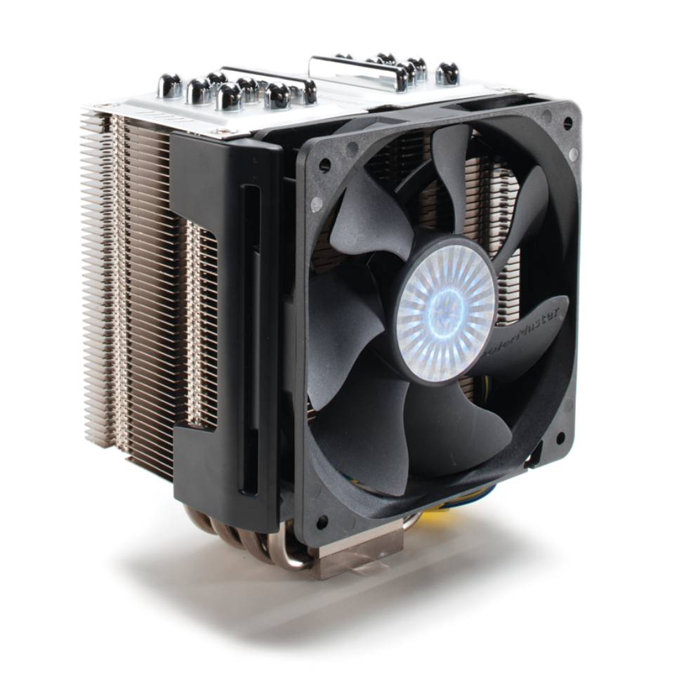

Don't know what your computer is made of?
Are you interested about what a computer is made of before you buy it, or are you curious about what's inside your own computer? Great idea! On this page, we'll cover the basic components of any PC in detail.
Motherboard
The motherboard is the foundation of the computer that connects all its parts. The processor, memory, graphics card, hard drive, and other components are attached to it. It allows them to work together and exchange data. You can think of the motherboard as the "skeleton" of the computer—without it, the computer wouldn’t function.
CPU (Central Processing Unit)
The processor is the "brain" of the computer. It performs all the calculations and commands needed for programs to work. When you press a button or open an app, the processor quickly processes data and gives the needed result. The more powerful the processor, the faster the computer works. It consists of cores (the more, the better) and clock speed (the higher it is, the faster tasks are completed).
GPU (Graphics Proseccing Unit)
A graphics card is a part of the computer responsible for processing images and videos. It helps display pictures, games, and movies on the screen. The more powerful the graphics card, the better the visuals and the faster games and video editing programs run. It has its own processor (GPU) and memory, which make image processing fast and high-quality.
RAM (Random Access Memory)
RAM (Random Access Memory) is a temporary storage for data that the computer is currently using. When you open a program or a game, it loads into RAM to run quickly. The more RAM you have, the more tasks the computer can handle at the same time without slowing down. When the computer is turned off, all data in RAM is lost.
HDD (Hard Disk Drive)
A hard drive (HDD) or solid-state drive (SSD) is where the computer stores all files and programs. It’s like a big storage cabinet for data—documents, photos, videos, and games are all kept there. Unlike RAM, the data on a hard drive doesn’t disappear when the computer is turned off. An SSD works faster than an HDD, so a computer with an SSD starts up more quickly.
Power Unit
The power supply unit (PSU) is the part of the computer that provides electricity to all its components. It takes energy from the wall outlet and distributes it to the processor, graphics card, hard drive, and other parts. Without the power supply, the computer won’t turn on. It’s important for it to be powerful enough; otherwise, the system may not work properly.
Cooling System
The cooling system helps prevent the computer from overheating. When the processor and graphics card work, they generate heat, and without cooling, the computer could stop working properly. Cooling is done with fans, heatsinks, and even liquid cooling systems. The better the cooling, the more stable the computer runs, especially in games and demanding programs.